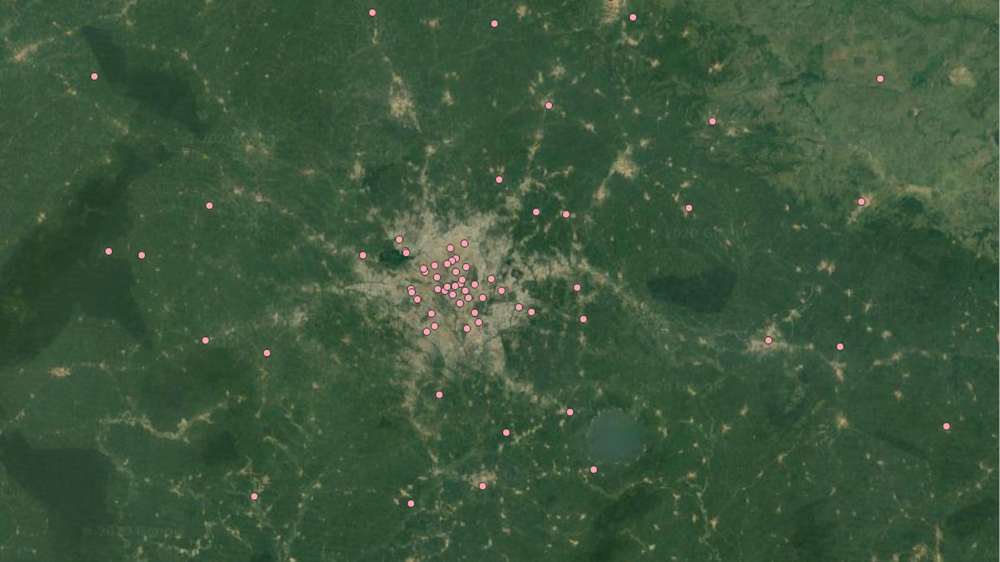
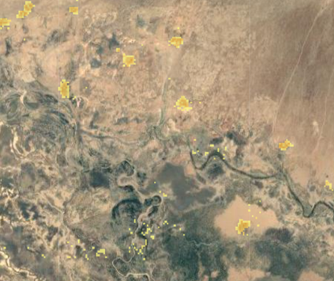
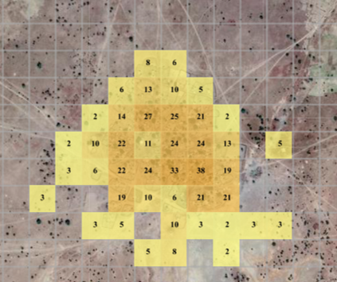
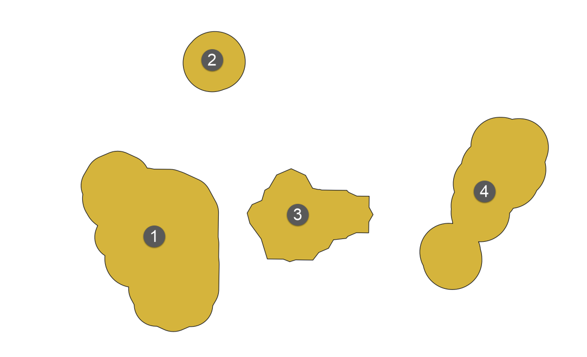
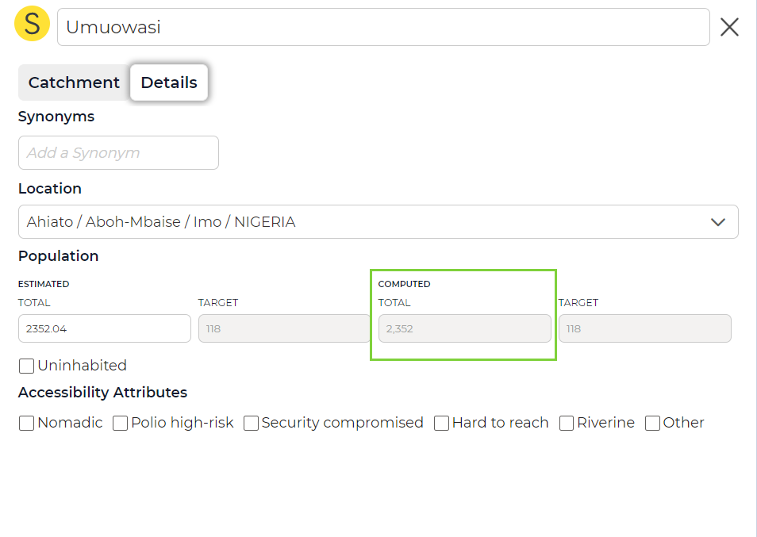

1. Background
1.1. GIS basics
“GIS” stands for “Geospatial Information System”. In this part we will briefly introduce a few key concepts that are relevant for this application.
In many places, microplans are drawn maps of health facilities and villages on paper. With GIS we can bring this analog method into the digital space: a map can be linked to other data and thus we can store the catchment of a health facility digitally.
Why would it be useful for public health? Geographic mapping of disease has been used for years, when Dr. John Snow used it in 1859 to trace the source of a cholera outbreak in London. Maps were used to identify the location of drinking water pumps in relation to the homes of people who died and eventually determining the precise contaminated pump that was the source of the epidemic. Since then, immense growth in technology has allowed for the advanced mapping of disease spread, identifying sources, and determining target areas for interventions. Effective and coordinated national and global surveillance systems contribute to tracking and monitoring the spread of diseases across communities and across geo-political borders, guiding the planning and targeting of response, containment and control measures to areas most at risk, and supporting risk assessment and preparedness activities.
Having these kind of tools digitally available is invaluable.
To make it happen, the following things are needed:
Hardware is needed for GIS - such as a tablet
Software is needed - such as the GMT
Data is needed - such as the health facilities, settlements and population
We’ll talk about the data that is being used here in a bit.
In general there are three data types used in GIS:
Vector data
Raster data
Tabular data
1.1.1. Vector data
A coordinate-based data model that represents geographic features as points, lines and polygons. Each point feature is represented as a single coordinate pair, while line and polygon features are represented as ordered lists of vertices. Attributes are associated with each feature, as opposed to a raster data model, which associates attributes with grid cells. Examples: health facilities, settlements, roads, or country boundaries.
As an example, these could be points of health facilities:

1.1.2. Raster data
A spatial data model that defines space as an array of equally sized cells (pixels) arranged in rows and columns, and comprised of single or multiple bands. Each cell contains an attribute value and location coordinates. Unlike a vector structure, which stores coordinates explicitly, raster coordinates are contained in the ordering of the matrix. Groups of cells that share the same value represent the same type of geographic feature. Example: population per pixel.
As an example a population raster at low zoom:

And at high zoom level, with population values displayed per grid cell:

1.1.3. Tabular data
Descriptive information, usually alphanumeric, that is stored in rows and columns in a database and can be linked to spatial data. Examples: employees per health facility.
1.2. Settlements
1.2.1. Settlement polygons
The settlements that you see on the map in this application are vector data, as described above. They have been created the following way:
High resolution satellite imagery was used to identify all buildings for Nigeria - this resulted in a vector layer that contains all buildings
The buildings in this layer were aggregated according to a set of rules to group them
The resulting groups are the settlements we see on the map
Advantages of this technique:
All areas where people live can be mapped
Disadvantages of this technique:
The data is only as good as the imagery used to start with
The building extraction algorithm may not always be accurate
As a result, there may be areas where there is no settlement marked on the map, but people are living there.
1.2.2. Settlement names
As we have seen above, settlements are polygons, derived from building polygons. What we see on the map are the shapes of those settlements. Those shapes would be meaningless for a person, since humans don’t think in shapes but we refer to settlements with names. Thus, there is additionally a point layer of settlement names. This point layer can be intersected with the polygon layer - this way, the polygons can be named.
In an ideal case, there would be one settlement name for each polygon. And ideally, each settlement would correspond exactly to one polygon. Let’s take an example below:

We could assume those are four different villages, each has one single name. We would need a point layer that corresponds to that exactly - the black points labelled 1-4.
However, there are two things that complicate this:
Since the settlements are automatically generated from satellite imagery, they may not always correspond to the actual settlement outlines. For instance in areas where two cities have fused and there is agglomeration, the settlement aggregation algorithm would assume that this is one single settlement.
Often, one polygon intersects several name points - potentially because there are names not only for the principal name of a city, but maybe a neighborhood or an area. That’s why we have the possibility to have sub-place names (see Subplace Names).
When you use the “Add Settlement” functionality in the GMT, there are two things you might be doing: if you add a settlement with a location where there is no other settlement, you are creating a new point, and in the background the application buffers this point with a 100m radius - so a polygon is created (see content/tutorials/20tutorial2:adding a settlement where there is none on the map). In all other cases, you are simply creating a new name point. This point is then intersected with the underlying polygon. Since population is calculated per settlement polygon (and not settlement name point, see below), more information is required when you add a second name in an already existing polygon (see Add Settlement Name within existing settlement).
1.3. Population
As explained above, satellite imagery combined with a building extraction algorithm can already give us a good estimate as to where people live. If we would know how many people lived in a building, we would then obtain a very good population model, where only missing buildings would pose an issue. However, we cannot know the exact number of people living in each building. Thus, there are many ways to make a best guess to obtain that number. Many parameters can be used for that. As an example: survey data, the geographical context of the building, the size of the building, the neighborhood it is in, the land use of the surroundings etc. Taken together, these all serve as indicators to make a best guess for the population in a given building. Based on that information, a raster for the entire country is generated, at a 100m x 100m resolution. As a result, each 100mx100m square of the country has a population value.
This data can then be intersected with a settlement polygon, and in that way we can obtain the amount of people that live in each settlement. This corresponds to the number that is shown in “Computed Pop”.
